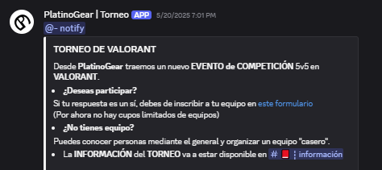
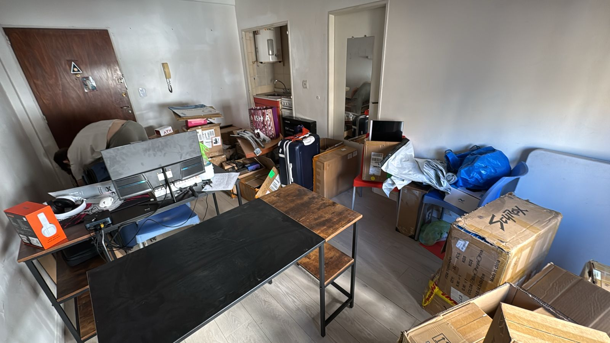

Bienvenido.
Bienvenido a mi blog. El cual va a tratar sobre el proceso de creacion de PlatinoGear. Va a ser un blog bastante corto por el momento, debido a que esta tienda lleva corto tiempo viva, pero se va a ir actualizando con el tiempo.

Primer capitulo: una historia que te llega al alma
Mis comienzos en la tienda de Platino Gear. Comence como un simple empleado ayudando a un amigo que creo su propia tienda hace 1 mes, respondiendo dudas sobre perifericos y demas. Un trabajo inicial tedioso, pero sin muchas complicaciones...
Segundo capitulo: Asentamiento
Ya siendo participe de la mayoria de las actividades de la tienda. Comence a crear eventos para la comunidad, analizando influencers y manejando mis propios horarios, siendo yo responsable del tiempo que le dedico a la tienda y de mis resultados. Manejando independientemente areas completas, delegando responsabilidades y demas...

Tercer capitulo:
Luego de 3 semanas, donde uno intenta sobrellevar la vida cursando la facultad y manejando una tienda de perifericos con amigos, pude lograr mantener el equilibrio de alguna forma, sacrificando en cierta parte mas la facultad que la tienda. Mi proyecto mas personal como prioridad de mi vida...

Tercer capitulo: Primer gran paso, las oficinas.
Ya para estas fechas, armamos la primer oficina. Un monoambiente de 20m2, con humedad, y falencias, pero nada que un poco de cariño no pueda solucionar. Luego de dias de mudanza, decepciones, idas y vueltas. Nos asentamos en las oficinas, logramos tener...